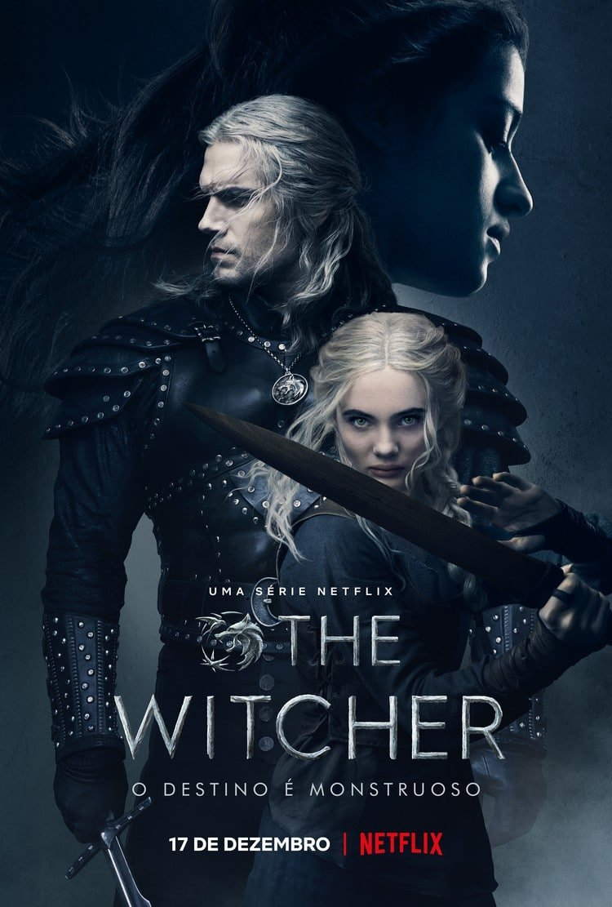
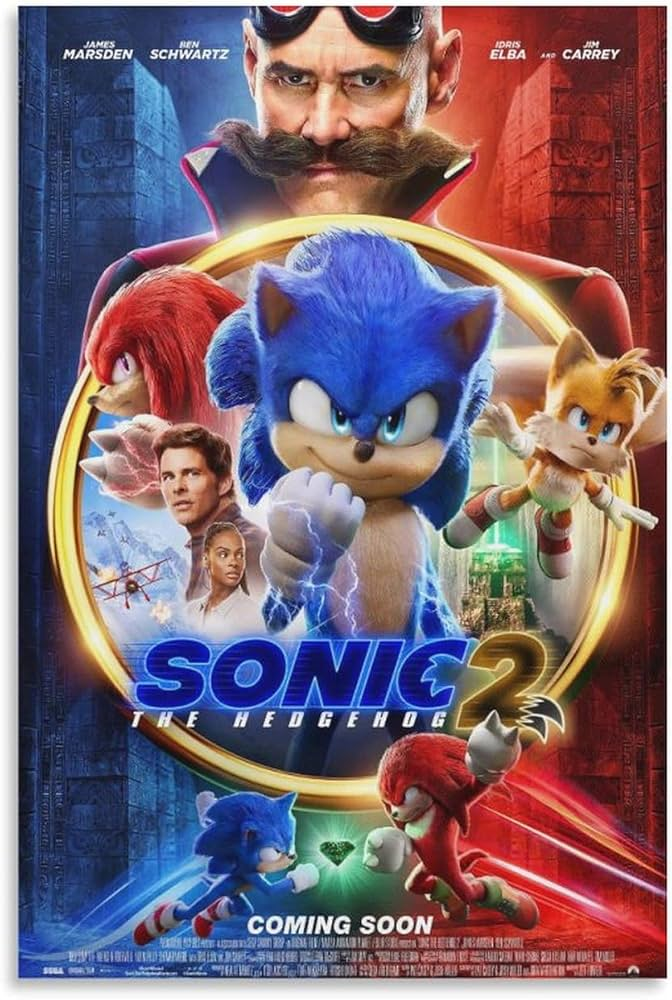
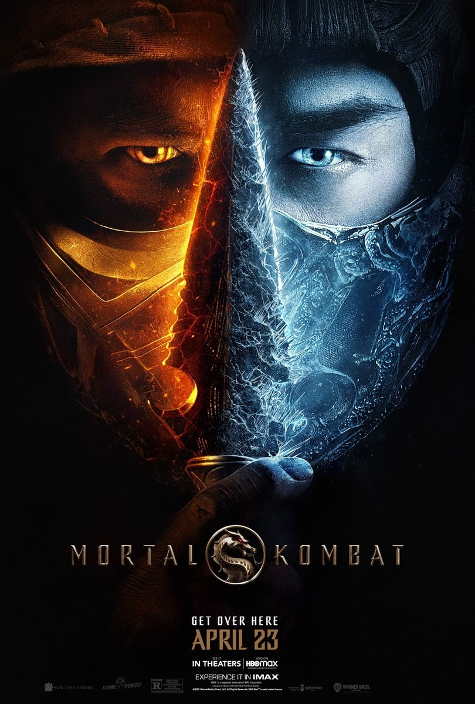

Filmes Populares Baseados em Jogos
A indústria cinematográfica tem cada vez mais se inspirado nos jogos eletrônicos para criar filmes de ação, aventura e até animações, proporcionando aos fãs uma nova maneira de vivenciar seus universos favoritos. Filmes e séries baseados em jogos têm se tornado sucessos de bilheteira, mesclando enredos dinâmicos, personagens carismáticos e efeitos especiais impressionantes. Além disso, esses filmes apresentam novas perspectivas sobre as histórias dos jogos, trazendo mais emoção e aprofundamento nos detalhes dos mundos virtuais que conquistaram milhões de jogadores ao redor do mundo.
-
The Witcher - Série de TV baseada no jogo "The Witcher 3: Wild Hunt".
The Witcher é uma série de televisão de drama e fantasia criada por Lauren Schmidt Hissrich para a Netflix. Baseada na série de livros homônima do autor polonês Andrzej Sapkowski, a série acompanha Geralt de Rivia, um caçador de monstros solitário que luta para encontrar seu lugar em um mundo onde as pessoas muitas vezes se mostram mais perversas do que as próprias criaturas que ele caça. Quando o destino o coloca no caminho de uma poderosa feiticeira e de uma jovem princesa com um dom especial, os três precisam aprender a navegar juntos pelo continente cada vez mais volátil.
-
Sonic: O Filme - Filme baseado no famoso jogo de plataforma.
A Baseado na franquia de videogame de grande sucesso global da Sega, SONIC THE HEDGEHOG conta a história do ouriço mais veloz do mundo enquanto ele abraça sua nova casa na Terra. Nesta comédia de aventura live-action, Sonic e seu novo melhor amigo Tom (James Marsden) se unem para defender o planeta do gênio do mal Dr. Robotnik (Jim Carrey) e seus planos de dominação mundial. O filme familiar também é estrelado por Tika Sumpter e Ben Schwartz como a voz de Sonic.—Paramount Pictures
-
Uncharted - Filme inspirado na franquia de jogos "Uncharted".
Em Uncharted, Nathan Drake (interpretado por Tom Holland), um jovem e talentoso caçador de tesouros, embarca em uma emocionante jornada ao lado do experiente Victor "Sully" Sullivan (Mark Wahlberg). A missão: encontrar a lendária fortuna perdida de Fernão de Magalhães, um tesouro que permaneceu escondido por mais de 500 anos. Ao longo da aventura, Nathan e Sully enfrentam perigos mortais, traições inesperadas e enigmas desafiadores que os levam a lugares exóticos e repletos de mistérios. Para Nathan, a busca pelo tesouro é mais do que uma aventura: é uma oportunidade de descobrir pistas sobre o paradeiro de seu irmão desaparecido. Inspirado na icônica franquia de jogos da Naughty Dog, o filme combina ação eletrizante, exploração histórica e humor leve, oferecendo uma nova perspectiva sobre as origens do famoso explorador Nathan Drake.

-
Mortal Kombat - Filme de ação inspirado no jogo de luta icônico.
Em Mortal Kombat, o lutador de MMA Cole Young (Lewis Tan), acostumado a perder em lutas por dinheiro, descobre que é alvo do temível guerreiro Sub-Zero (Joe Taslim), enviado pelo feiticeiro Shang Tsung para eliminá-lo. Sem entender o motivo, Cole descobre que possui uma marca de dragão, um sinal que o conecta a um antigo torneio conhecido como Mortal Kombat, onde guerreiros escolhidos representam a Terra em uma batalha pela sobrevivência do planeta. Guiado pelo destemido Lorde Raiden, guardião do Reino da Terra, Cole une forças com outros campeões, incluindo Liu Kang, Kung Lao, e o mercenário Kano, para treinar e preparar-se para o combate contra as forças do Outworld. À medida que enfrenta adversários brutais e desafios mortais, Cole precisa desbloquear seu verdadeiro poder interior para proteger sua família e derrotar seus inimigos. Com cenas de ação intensas e fidelidade aos elementos dos jogos, Mortal Kombat entrega um espetáculo visual repleto de lutas sangrentas, poderes sobrenaturais e homenagens aos personagens icônicos da série.
Críticas e Avaliações
Confira o que os críticos e o público têm a dizer sobre essas adaptações cinematográficas:
- The Witcher: "Uma adaptação fiel ao jogo, mas com o seu toque único. A série se destaca pelos personagens complexos e pela trama envolvente." - João Silva
- Sonic: O Filme: "Um filme divertido para todas as idades, que traz o Sonic de volta às telas com um visual incrível e um enredo empolgante." - Maria Oliveira
- Uncharted: "Embora tenha algumas diferenças em relação ao jogo, o filme entrega boas cenas de ação e mantém o espírito da franquia." - Carlos Almeida
- Mortal Kombat: "As lutas são o ponto forte do filme, mas a história deixa a desejar. Ainda assim, é uma experiência divertida para os fãs do jogo." - Fernanda Costa
Filmes em Produção
Além dos filmes já lançados, muitos outros estão em desenvolvimento. Aqui estão alguns filmes e séries baseados em jogos que você pode esperar para o futuro:
-
God of War - Série baseada no famoso jogo de ação que segue a jornada de Kratos, o Deus da Guerra.
Com grandes expectativas, essa adaptação promete entregar cenas épicas, inspiradas na mitologia grega e nórdica.
-
Twisted Metal - Série baseada no jogo de combate de veículos que promete trazer ação intensa e personagens excêntricos.
Com um elenco de peso, a série trará batalhas frenéticas, seguindo a popular franquia de videogames.
-
Gran Turismo - Filme baseado na famosa franquia de corridas, que promete entregar adrenalina nas telonas.
Inspirado nos pilotos de elite e no universo das corridas, este filme vai trazer a experiência imersiva das pistas.
Sugira um Filme
Tem um filme baseado em jogos que você adora e acha que outros deveriam conhecer? Envie sua sugestão abaixo!